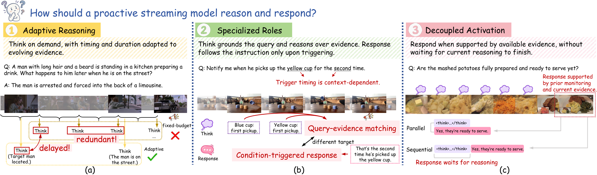
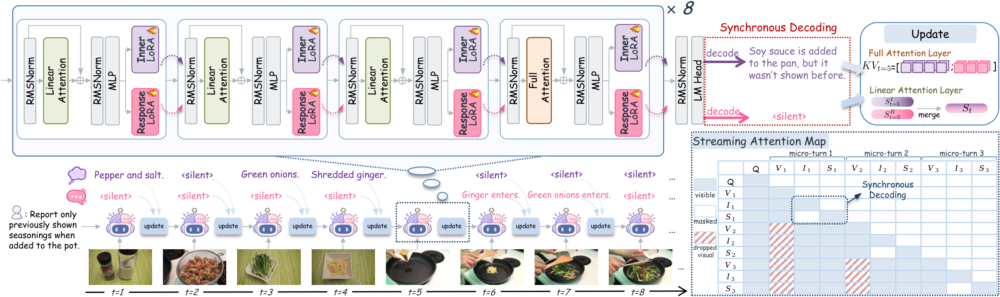
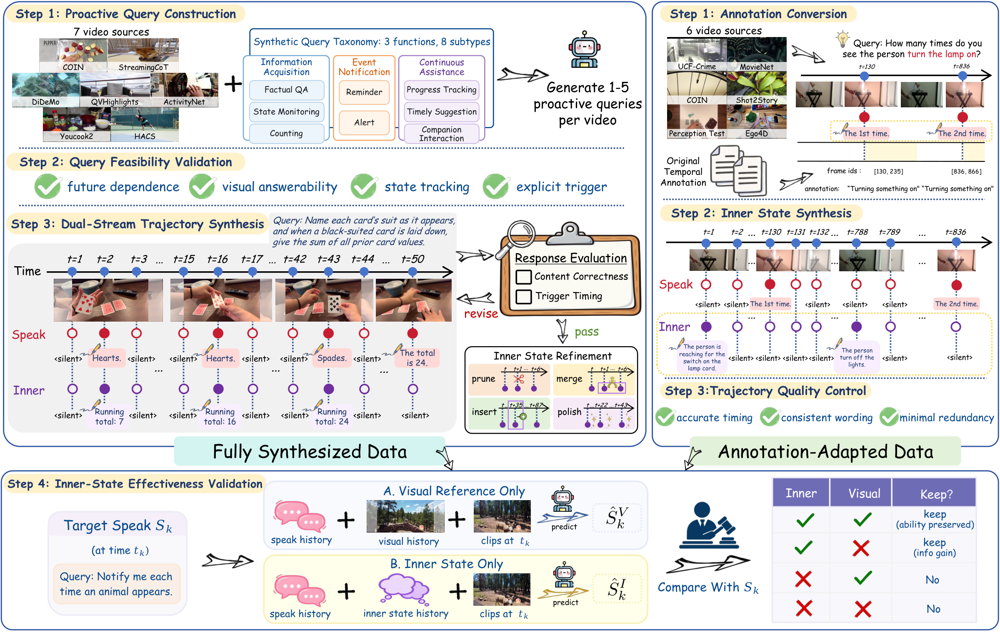
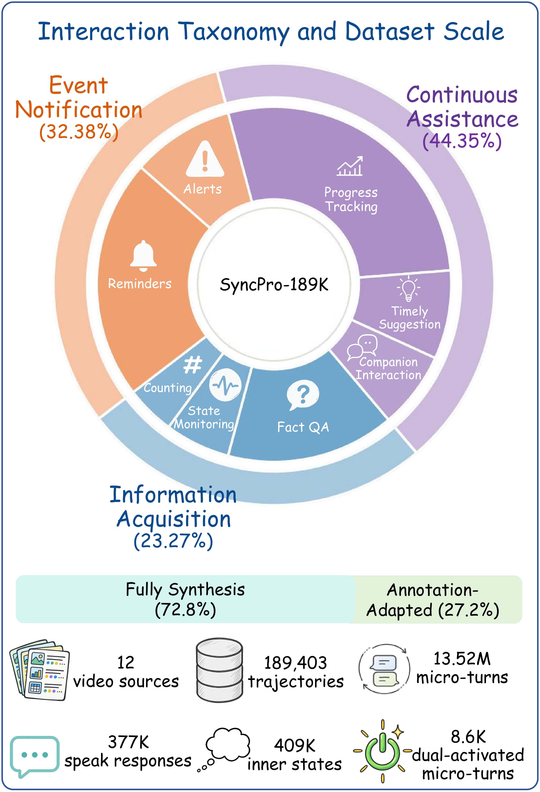

Learn when to activate
Supervised fine-tuning teaches branch actions and output content. Action Temporal Ranking strengthens the preference for the annotated response time over nearby silent steps.
1 State Key Laboratory of AI Safety, Institute of Computing Technology, CAS
2 University of Chinese Academy of Sciences3 Qwen Business Unit of Alibaba
Reasoning and responding, in sync
SyncPro gives a streaming video assistant two specialized branches: Inner tracks query-relevant evidence, while Response delivers the requested output. They share the same causal history and activate independently, so a response can proceed alongside ongoing reasoning.

Proactive streaming video understanding requires assistants to track unfolding events and respond when a user’s requested condition is met. To make these decisions, assistants must accumulate relevant evidence and reassess response conditions as new observations arrive. Existing work offers complementary capabilities for this process: proactive video assistants learn when to respond, while streaming video reasoning methods generate scheduled intermediate text to organize observations and support subsequent answers. Together, these capabilities provide a foundation for proactive reasoning, but how to coordinate ongoing reasoning with timely responses remains underexplored. In a direct adaptation, fixed reasoning intervals can trigger updates when nothing relevant has changed or postpone useful updates until the next scheduled step. Sharing one generation path also couples two distinct requirements: preserving evidence for future decisions and producing only the response requested by the user. Moreover, responses generated after reasoning must wait for it to finish, even when sufficient evidence is already available. To address these challenges, we introduce SyncPro, a synchronous dual-stream framework with specialized generation paths for evidence tracking and user-facing responses. Its Inner and Response branches share causal history and activate independently, allowing relevant evidence changes to trigger internal updates and responses to proceed concurrently with ongoing reasoning. We construct 189K dual-stream examples and train SyncPro through supervised fine-tuning followed by trajectory-level reinforcement learning. Experiments across three proactive benchmarks show improved response timing and more accurate answers to user requests.
See SyncPro in action
Video could not load. Open the video directly.
The outline pulses when a branch produces an output. Inner is shown here to make the model’s reasoning visible; only Response is returned to the user. Playback speed is marked within each clip.
Select an example above to see its request and original outputs.
Method
At each micro-turn, SyncPro encodes the current observation once. Separate LoRA routes let Inner and Response each choose to remain silent or generate content. Both branches decode from the same prefix, then contribute their completed outputs to the context for the next observation.

Supervised fine-tuning teaches branch actions and output content. Action Temporal Ranking strengthens the preference for the annotated response time over nearby silent steps.
Trajectory-level reinforcement learning optimizes hard-window F1 over complete causal rollouts, rewarding event coverage and penalizing unmatched responses.
Dataset
Causal video trajectories pair a user query with supervision for both branches: when to update internal evidence, when to respond, and when to stay silent.


The released dataset contains SFT annotations and portable frame references. Original videos are obtained from their source datasets.
| Method | StreamingBench | ProactiveVideoQA | ||
|---|---|---|---|---|
| PO | WEB | EGO | VAD | |
| Streaming models | ||||
| VideoLLM-online | 4.00 | 25.90 | 25.00 | 25.00 |
| MMDuet | 29.44 | 38.90 | 46.00 | 27.40 |
| MMDuet2 | 34.60 | 53.30 | 33.60 | 28.90 |
| Em-Garde | 38.00 | 44.30 | 52.30 | 27.40 |
| VideoChat3 | – | 28.40 | 28.10 | 25.10 |
| Reasoning-enabled models | ||||
| VST | 19.60 | 21.11 | 24.97 | 25.08 |
| ThinkStream | 27.20 | 30.19 | 24.47 | 18.17 |
| Ours | ||||
| SyncPro-RL | 41.20 | 48.28 | 33.74 | 32.43 |
| SyncPro-SFT | 38.80 | 47.83 | 33.89 | 32.14 |
| Interleaved | 34.00 | 29.89 | 25.00 | 25.91 |
| Response-only | 22.80 | 27.98 | 27.98 | 31.17 |
StreamingBench-PO uses Acc@2s with a two-second tolerance. ProactiveVideoQA uses PAUC (ω = 0.5). Values are percentages; higher is better.
| Method | CRR (P/R/F1) | SSR (P/R/F1) | REC (P/R/F1) | Avg. F1 |
|---|---|---|---|---|
| Streaming models | ||||
| VideoLLM-online | 2.08/2.08/2.08 | 6.88/11.07/8.49 | 16.46/7.43/10.24 | 6.93 |
| Flash-VStream | 5.21/6.25/5.68 | 9.52/2.46/3.91 | 7.49/3.46/4.73 | 4.77 |
| StreamForest | 2.08/2.08/2.08 | 13.69/8.02/10.11 | 28.90/30.49/29.67 | 13.95 |
| MMDuet2 | 8.47/47.92/14.40 | – | 42.72/19.33/26.62 | 20.51 |
| Em-Garde | 18.22/47.92/26.40 | 14.87/54.88/23.40 | 39.66/47.33/43.16 | 30.99 |
| Reasoning-enabled models | ||||
| VST | 4.65/18.75/7.46 | 3.80/2.86/3.26 | 9.63/95.00/17.48 | 9.40 |
| ThinkStream | 3.09/18.75/5.30 | 3.65/49.60/6.80 | 31.48/23.01/26.58 | 12.89 |
| Ours | ||||
| SyncPro-RL | 16.99/64.58/26.91 | 17.50/48.17/25.67 | 35.43/84.95/50.00 | 34.19 |
| SyncPro-SFT | 18.09/62.50/28.06 | 13.14/57.06/21.36 | 33.12/85.14/47.69 | 32.37 |
| Interleaved | 23.18/41.97/29.86 | 2.38/1.59/1.90 | 0.52/2.08/0.83 | 10.87 |
| Response-only | 20.93/61.75/31.26 | 4.74/47.22/8.61 | 2.31/18.75/4.11 | 14.66 |
Precision, recall, and F1 use a two-second tolerance. Average F1 is the task mean; MMDuet2’s reported mean covers its two available tasks. Values are percentages.
Citation
@misc{tian2026syncpro,
title = {SyncPro: Synchronous Reasoning and Responding for
Proactive Streaming Video Understanding},
author = {Tian, Xueyun and Xu, Bingbing and Liu, Jiaming and
Yu, Jinpeng and Shi, Yang and Zhao, Yu and
Huang, Ruihua and Wang, Yuanzhuo and Shen, Huawei},
year = {2026},
url = {https://eureka-maggie.github.io/SyncPro/}
}